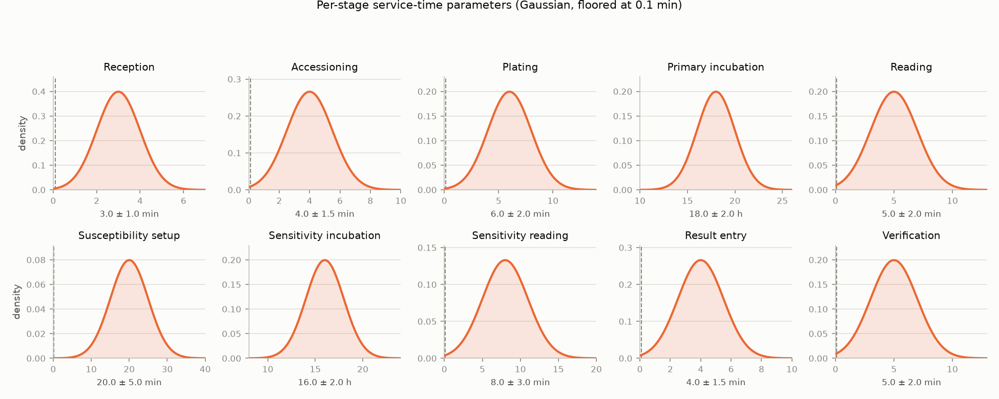

Arrived and Completed are independent cohorts - a sample can complete in the observation window without having arrived in it (it arrived during warm-up), or vice versa (it's still mid-pipeline at run end).
| Specimen type | Arrived | Completed | Positive | Negative | % positive |
|---|---|---|---|---|---|
| Blood Culture | 316 | 199 | 12 | 187 | 6% |
| Tissue | 21 | 9 | 5 | 4 | 56% |
| Urine | 441 | 180 | 81 | 99 | 45% |
| Swab | 897 | 529 | 119 | 410 | 22% |
| Stool | 151 | 66 | 3 | 63 | 5% |
| Sputum | 148 | 65 | 21 | 44 | 32% |
| Multi Site | 569 | 375 | 2 | 373 | 1% |
| Nail | 27 | 21 | 13 | 8 | 62% |
| Body Fluid | 21 | 8 | 4 | 4 | 50% |
| Breast Milk | 26 | 12 | 2 | 10 | 17% |
| Broncho Alveolar Lavage | 14 | 4 | 1 | 3 | 25% |
| Environmental | 10 | 15 | 15 | 0 | 100% |
| Stem Cells | 19 | 10 | 0 | 10 | 0% |
| Drain Tube Other Device | 12 | 3 | 2 | 1 | 67% |
| Fluid | 5 | 0 | 0 | 0 | — |
| Post Mortem Swab | 4 | 4 | 4 | 0 | 100% |
| Cerebrospinal Fluid | 1 | 1 | 1 | 0 | 100% |
| Synovial Fluid | 4 | 1 | 0 | 1 | 0% |
| Hair | 4 | 1 | 0 | 1 | 0% |
| Other | 3 | 0 | 0 | 0 | — |
One patient per arrived sample (see Background/Microbiology Context); age bands use the thresholds that modulate positivity (config.young_age_threshold / elderly_age_threshold).
| Gender | Patients | % |
|---|---|---|
| Female | 1418 | 53% |
| Male | 1275 | 47% |
| Age | Years |
|---|---|
| Mean | 55 |
| Median | 55 |
| Min | 0 |
| Max | 100 |
| Age band | Patients | % |
|---|---|---|
| Young (≤ 5) | 25 | 1% |
| Adult | 1804 | 67% |
| Elderly (≥ 65) | 864 | 32% |
| Specimen type | Completed | Mean turnaround | Min turnaround | Max turnaround |
|---|---|---|---|---|
| Blood Culture | 199 | 54.6 h | 37.0 h | 104.0 h |
| Tissue | 9 | 83.5 h | 42.7 h | 105.0 h |
| Urine | 180 | 66.0 h | 37.0 h | 106.6 h |
| Swab | 529 | 60.2 h | 36.4 h | 107.4 h |
| Stool | 66 | 50.4 h | 37.3 h | 96.8 h |
| Sputum | 65 | 59.5 h | 39.5 h | 106.3 h |
| Multi Site | 375 | 52.6 h | 35.2 h | 70.3 h |
| Nail | 21 | 75.2 h | 44.0 h | 103.8 h |
| Body Fluid | 8 | 67.4 h | 36.6 h | 99.9 h |
| Breast Milk | 12 | 54.5 h | 37.0 h | 73.5 h |
| Broncho Alveolar Lavage | 4 | 52.5 h | 44.2 h | 67.4 h |
| Environmental | 15 | 83.3 h | 62.0 h | 104.1 h |
| Stem Cells | 10 | 51.1 h | 41.7 h | 71.3 h |
| Drain Tube Other Device | 3 | 90.0 h | 69.9 h | 101.2 h |
| Fluid | 0 | — | — | — |
| Post Mortem Swab | 4 | 81.4 h | 66.4 h | 97.9 h |
| Cerebrospinal Fluid | 1 | 95.8 h | 95.8 h | 95.8 h |
| Synovial Fluid | 1 | 67.4 h | 67.4 h | 67.4 h |
| Hair | 1 | 48.6 h | 48.6 h | 48.6 h |
| Other | 0 | — | — | — |
Median is shown alongside the mean as a check: turnaround is a sum of mostly-Gaussian stage durations, so absent heavy queueing it should be roughly symmetric and the two should track each other. If they diverge noticeably, the mean is being pulled by a skewed tail (e.g. queueing delay) and the median is the more representative figure.
| Culture result | Completed | Mean turnaround | Median turnaround | Min turnaround | Max turnaround |
|---|---|---|---|---|---|
| Culture positive | 285 | 83.4 h | 76.5 h | 60.0 h | 107.4 h |
| Culture negative | 1218 | 52.6 h | 51.0 h | 35.2 h | 71.8 h |
Susceptibility-related phases only apply to positive samples; a dash means no completed sample of that type reached that phase.
| Specimen type | Reception | Accessioning | Plating | Primary incubation | Reading | Susceptibility setup | Sensitivity incubation | Sensitivity reading | Result entry | Verification |
|---|---|---|---|---|---|---|---|---|---|---|
| Blood Culture | 3.1 min | 4.1 min | 5.9 min | 17.9 h | 4.9 min | 19.6 min | 16.3 h | 7.3 min | 3.8 min | 5.1 min |
| Tissue | 3.3 min | 4.7 min | 6.6 min | 18.7 h | 4.9 min | 21.5 min | 15.6 h | 8.5 min | 3.9 min | 4.0 min |
| Urine | 3.0 min | 4.0 min | 6.0 min | 18.3 h | 4.9 min | 20.1 min | 16.3 h | 8.5 min | 4.1 min | 4.9 min |
| Swab | 2.9 min | 4.0 min | 6.0 min | 18.0 h | 5.1 min | 20.1 min | 15.8 h | 7.8 min | 4.1 min | 4.9 min |
| Stool | 3.1 min | 3.9 min | 6.1 min | 18.0 h | 5.2 min | 21.8 min | 15.0 h | 6.2 min | 3.8 min | 5.3 min |
| Sputum | 3.0 min | 3.9 min | 6.4 min | 17.9 h | 5.0 min | 21.2 min | 16.1 h | 9.1 min | 3.9 min | 5.4 min |
| Multi Site | 3.0 min | 3.9 min | 5.9 min | 17.9 h | 5.2 min | 19.5 min | 17.5 h | 5.7 min | 3.9 min | 5.0 min |
| Nail | 3.1 min | 4.0 min | 6.2 min | 18.0 h | 5.1 min | 18.9 min | 16.1 h | 7.3 min | 3.9 min | 5.2 min |
| Body Fluid | 2.8 min | 4.1 min | 6.3 min | 18.6 h | 3.9 min | 17.4 min | 16.7 h | 6.8 min | 3.8 min | 5.5 min |
| Breast Milk | 3.1 min | 3.9 min | 6.0 min | 18.5 h | 5.1 min | 28.2 min | 14.7 h | 11.1 min | 4.4 min | 5.9 min |
| Broncho Alveolar Lavage | 2.5 min | 4.5 min | 6.4 min | 19.2 h | 5.6 min | 24.4 min | 14.9 h | 9.2 min | 3.5 min | 4.6 min |
| Environmental | 3.0 min | 3.6 min | 5.7 min | 18.3 h | 4.7 min | 19.7 min | 15.7 h | 7.6 min | 3.8 min | 4.4 min |
| Stem Cells | 3.4 min | 4.7 min | 6.4 min | 18.4 h | 4.1 min | — | — | — | 4.0 min | 5.3 min |
| Drain Tube Other Device | 3.5 min | 3.6 min | 3.0 min | 18.3 h | 4.1 min | 18.7 min | 16.0 h | 3.4 min | 2.7 min | 6.3 min |
| Fluid | — | — | — | — | — | — | — | — | — | — |
| Post Mortem Swab | 3.0 min | 4.7 min | 6.6 min | 18.2 h | 3.0 min | 20.7 min | 15.2 h | 7.0 min | 3.9 min | 5.6 min |
| Cerebrospinal Fluid | 1.6 min | 4.7 min | 3.4 min | 21.1 h | 5.0 min | 19.3 min | 15.6 h | 13.9 min | 6.2 min | 5.8 min |
| Synovial Fluid | 4.3 min | 2.3 min | 5.6 min | 16.1 h | 5.7 min | — | — | — | 4.4 min | 3.3 min |
| Hair | 3.9 min | 4.2 min | 6.7 min | 16.9 h | 6.6 min | — | — | — | 1.9 min | 4.6 min |
| Other | — | — | — | — | — | — | — | — | — | — |
Pooled across all specimen types. Negative samples never reach the susceptibility-related phases, so those are shown as a dash.
| Culture result | Reception | Accessioning | Plating | Primary incubation | Reading | Susceptibility setup | Sensitivity incubation | Sensitivity reading | Result entry | Verification |
|---|---|---|---|---|---|---|---|---|---|---|
| Culture positive (285) | 3.0 min | 4.0 min | 6.0 min | 18.2 h | 5.0 min | 20.1 min | 16.0 h | 8.0 min | 4.0 min | 5.0 min |
| Culture negative (1218) | 3.0 min | 4.0 min | 6.0 min | 18.0 h | 5.1 min | — | — | — | 4.0 min | 5.0 min |
The parameters behind every phase-duration figure above: each stage's duration is drawn independently from a Gaussian (random.gauss(mean, stdev), floored at 0.1 minutes in processes.py's _duration), the same for every sample type and culture outcome. Configured in SimulationConfig (config.py).
| Stage | Mean | Stdev | % of draws below the 0.1 min floor |
|---|---|---|---|
| Reception | 3.0 min | 1.0 min | 0.19% |
| Accessioning | 4.0 min | 1.5 min | 0.47% |
| Plating | 6.0 min | 2.0 min | 0.16% |
| Primary incubation | 18.0 h | 2.0 h | ~0% |
| Reading | 5.0 min | 2.0 min | 0.71% |
| Susceptibility setup | 20.0 min | 5.0 min | ~0% |
| Sensitivity incubation | 16.0 h | 2.0 h | ~0% |
| Sensitivity reading | 8.0 min | 3.0 min | 0.42% |
| Result entry | 4.0 min | 1.5 min | 0.47% |
| Verification | 5.0 min | 2.0 min | 0.71% |
